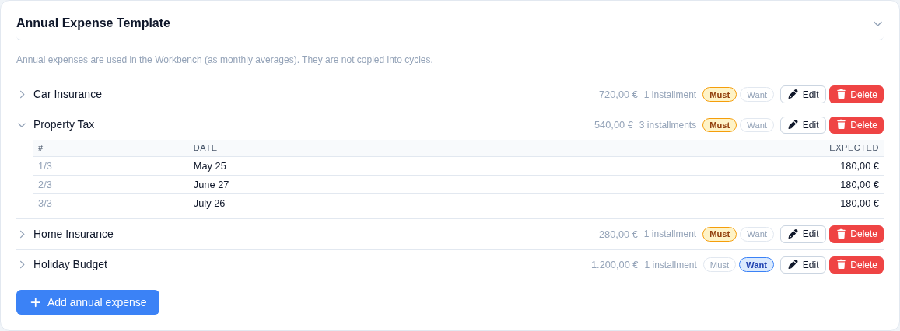
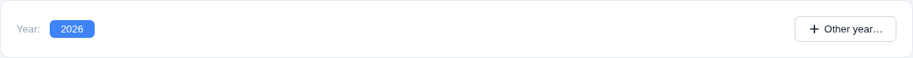
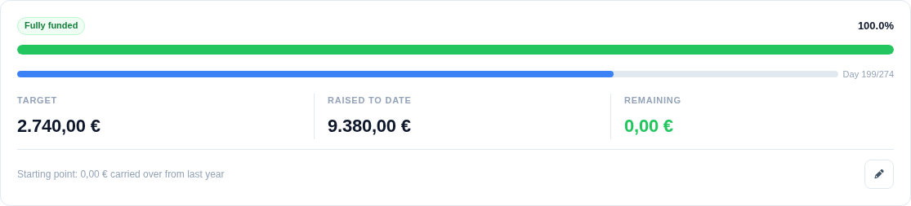
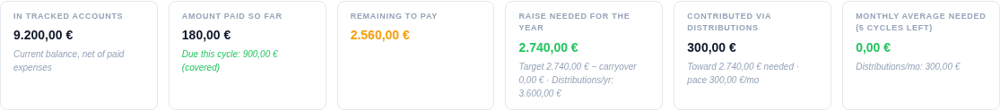
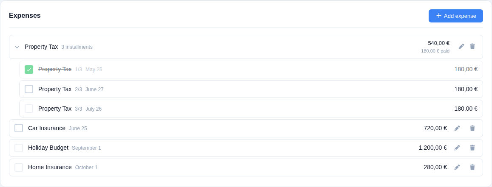
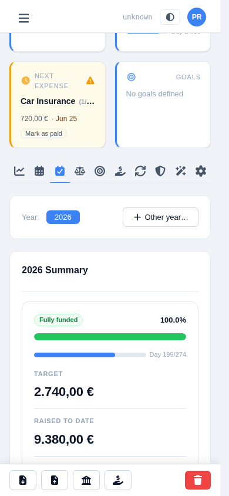
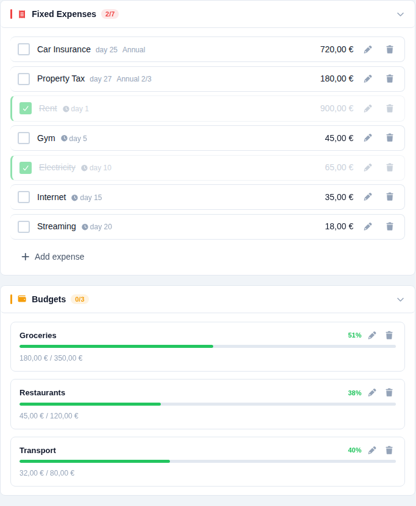
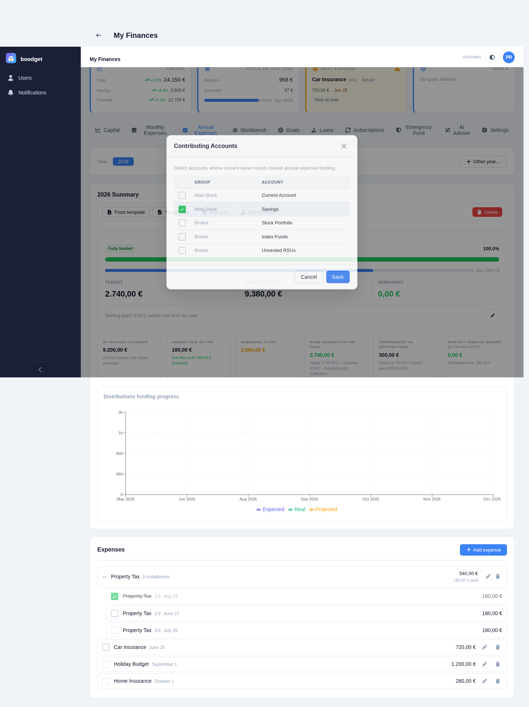

Tracking your Annual Expenses
Insurance, taxes, subscriptions billed once a year — the bills that don't fit a monthly budget but still need to be planned for. The Annual Expenses section spreads them across the year, tracks what's been set aside, and hands off actual payments to the cycle they fall in. This page walks through setting it up and using it, step by step.
In Settings → Annual Expense Template, define each recurring annual expense: a name, its total annual value, a Must/Want classification, and one or more installments — each with its own month and day. Most expenses have a single installment; something like a property tax billed in three parts gets three. The expected value per installment (annual value ÷ number of installments) is computed for you.
The template is the recurring definition — it's copied into a new year (see next step) rather than used directly.

The Annual Expenses tab is scoped to a calendar year at a time. Opening a year copies every item and installment from the current template into that year as a snapshot — later template edits won't retroactively change a year you've already opened. The current calendar year is opened automatically the first time a cycle spanning it is created, or you can open any year manually from the year selector.

The summary card reads like a savings goal: a progress bar shows Raised to date (money in your tracked accounts, plus what's already been paid — so paying a bill doesn't make the bar go backwards) against the year's total Target, with the shortfall shown as Remaining. A slim second bar tracks how far through the year you are, from January 1st to the last installment date. A caption at the bottom shows the carryover brought in from last year, editable inline.
The toolbar above the summary is also where you sync the year against the template in either direction — pull in template changes (replacing template-derived items, keeping ad-hoc ones), or push the year's current items back out to become the new template.

Below the hero, a strip of secondary figures breaks the picture down further: how much sits in your tracked accounts right now, how much has been paid so far (and whether this cycle's due amount is already covered), how much is left to pay, how much still needs to be raised for the year after accounting for the carryover, how much has come in via linked distributions, and a monthly average needed for the cycles remaining.

Below the summary, every expense for the year is listed. A single-installment expense is a flat row; a multi-installment one expands into its individual installments, each showing its date, expected value, and paid status. You can add ad-hoc items directly to a year without touching the template, and edit or delete any item at any time.


You don't pay annual expenses from the Annual Expenses tab itself — when a cycle's date range covers an installment's due date, that installment automatically appears alongside the cycle's own fixed expenses, tagged "Annual" (with an "N/M" label for multi-installment items) so it's easy to tell apart. Tick it as paid and adjust the real amount right there, same as any other expense; the Annual Expenses tab picks up the change immediately. If a year is opened after a cycle already exists, the cycle's Pull annual button retroactively links any installments that fall in its range.

Two dossier-wide settings feed the "Raised to date" figure: which accounts count as your annual-expenses fund (their combined current value, from your latest Capital snapshot), and which distributions count as monthly contributions toward it (summed whenever they're marked done in a cycle within the selected year). Both are picked once per dossier — not per year — from the toolbar buttons on the summary card.
